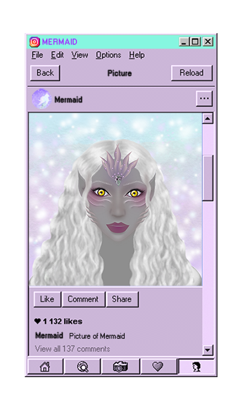
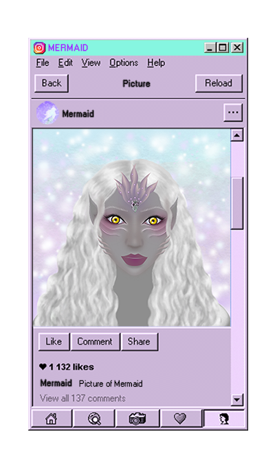

Mermaids look like a human but their flash is like a fish. Their faces are similar to humans but they have gills on their neck to breath in the water. They can live without water but they live under the sea because they have a more favorable physical condition to live in water. Some parts of their bodies are covered with scales. When they come out of the water they have legs and when they are in the water their legs change to fish tails. Each of them has a different tail shape.
♥︎ click here to see more photos of defferent tails ♥︎
Mermaids are aggressive towards humans or enemies but they are warmhearted among themselves. The reason why they don’t like humans is that humans pollute the sea. They love music and dancing so they love to sing and dance with their folk songs played on instruments made of seashells.

Mermaids are much stronger than humans and they move like a fish. They can camouflage their skin in the water to protect themselves especially when there are humans or enemies. They have strong energy and they can control the water to use it like a weapon.
♥︎ click here to see ♥︎